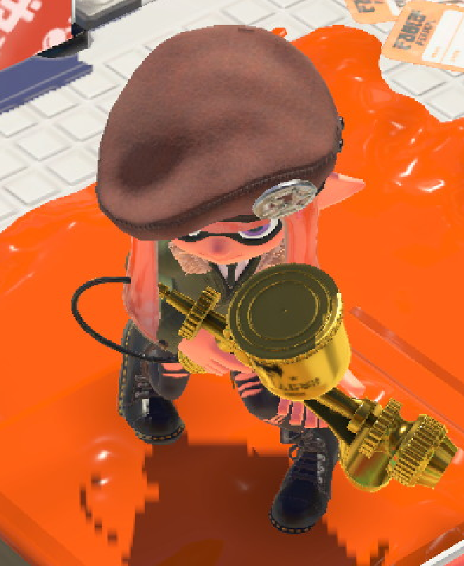

¡¡¡Bienvenid@ al Altar de Marie!!!

Pues es un proyecto personal que hago en mi tiempo libre en la universidad. Planeo que sea una especie de ARG roleplay a modo de broma, donde una inkling llamada Rice está obsesionada con Marie, recopilando todo lo que sabe para alabarla en cada oración, o algo así.
Asi se ve la desgraciada de Rice.